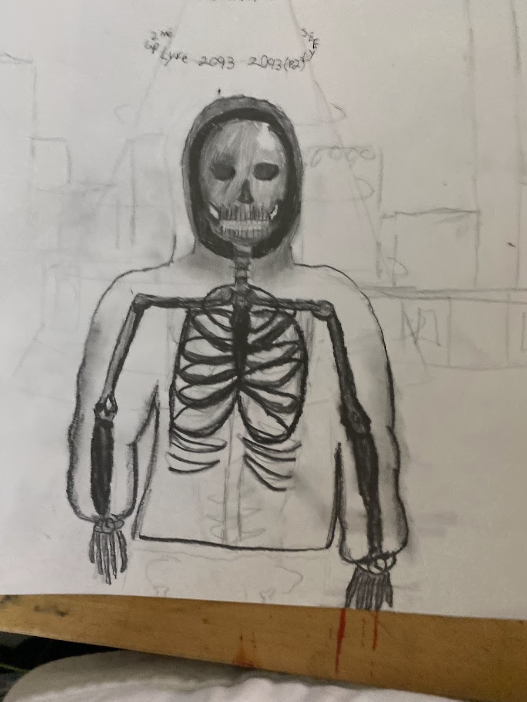

About the Project
This was a small side project that was made in my high school art club the task was to make a poster for a music artiest. I did mine on Yeat an American rapper known for helping popularize the modern rage rap sound. He makes experimental hip-hop with heavy bass, futuristic synths, distorted production, and lots of Auto-Tune. His music is usually high-energy and atmospheric, with catchy flows, unusual slang, and repetitive ad-libs. He first blew up around 2021 with songs like “Gët Busy” and “Money So Big,” and has since experimented with more futuristic and electronic sounds.
About The Poster
So, I never got to finish this poster because of how fast we moved on to the next art club project.The Skeleton is based off of his After Life album and he is being taken by Aliens based off the UFO in his 2 Alive album. The numbers around the beam is from his 2024 album 2093 the background is also based off of this album as it shows the futuristic city landscape.
